Veja e descubra mais sobre locais que são lares de ecossistemas aquáticos.
See and learn more about places that host aquatic ecosystems.
❮
❯
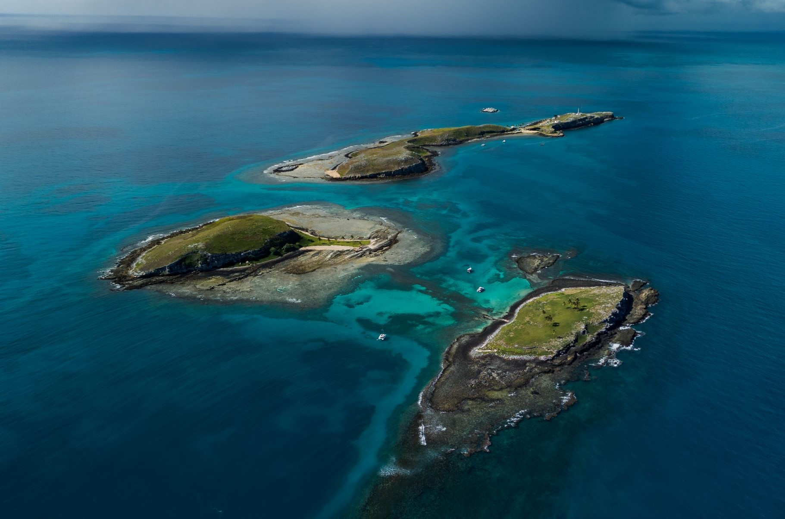
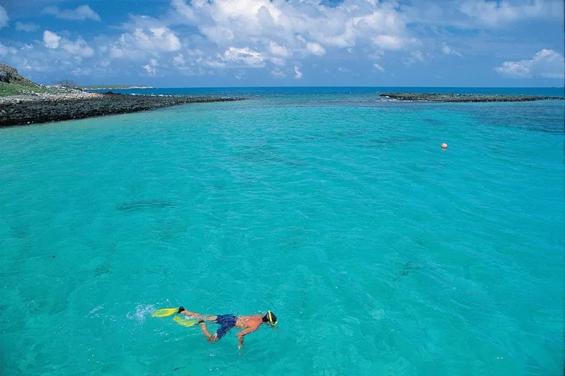
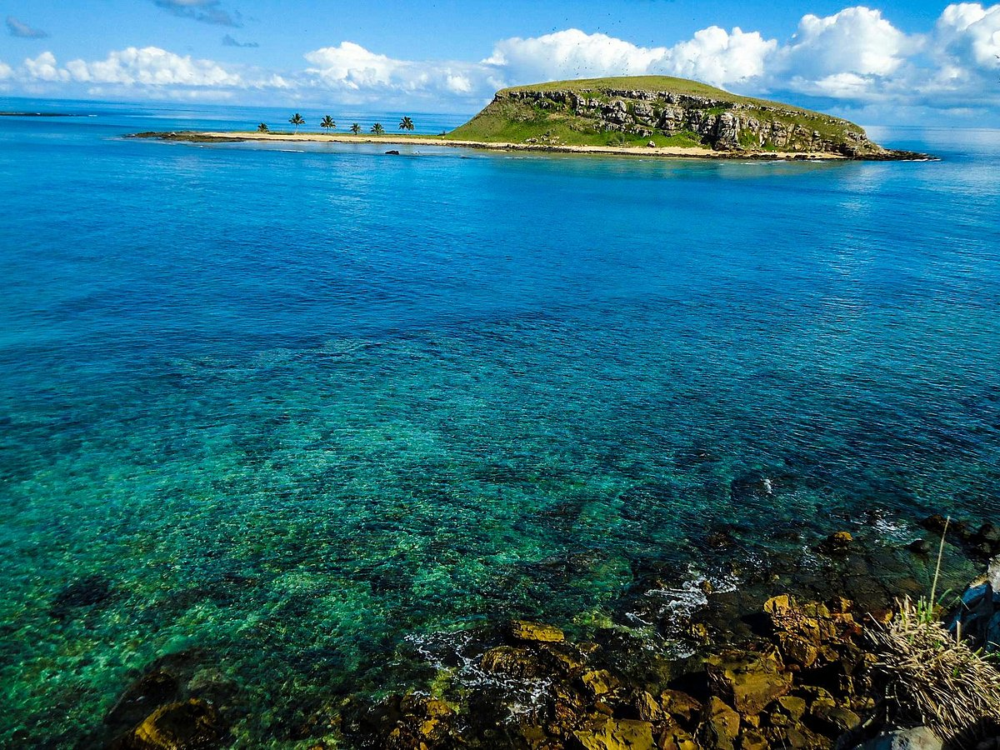
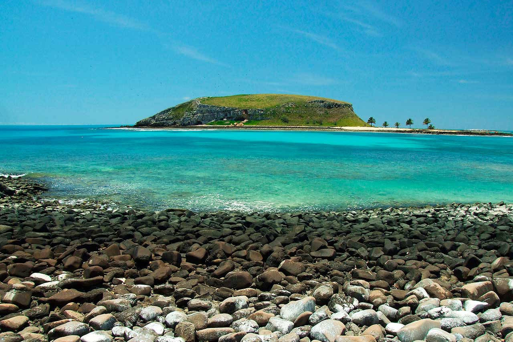
Abrolhos
Abrolhos
O Arquipélago de Abrolhos, na Bahia, é um dos maiores santuários marinhos do Brasil, famoso por seus recifes de corais e pela observação de baleias-jubarte.
The Abrolhos Archipelago, in Bahia, is one of Brazil’s largest marine sanctuaries, renowned for its coral reefs and whale watching.
❮
❯
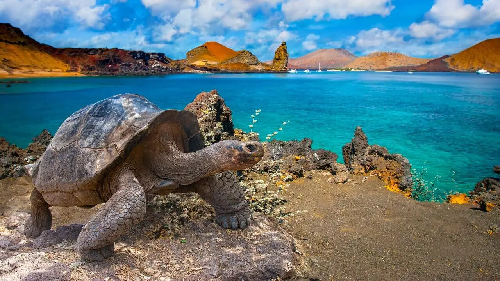

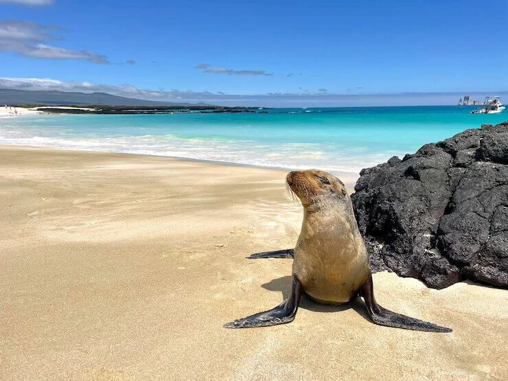
Galápagos
Coastal Zones
As Ilhas Galápagos, no Equador, são famosas por sua biodiversidade única e por terem inspirado as pesquisas de Charles Darwin sobre a evolução das espécies.
The Galápagos Islands in Ecuador are famous for their unique biodiversity and for inspiring Charles Darwin's research on the evolution of species.
❮
❯
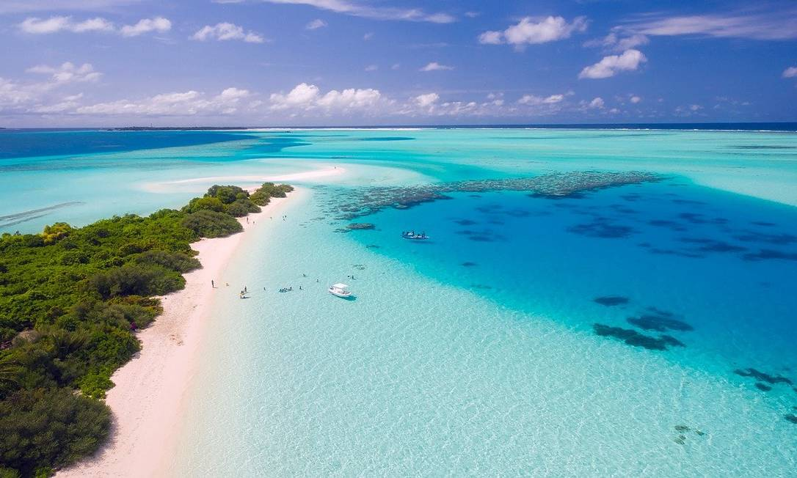
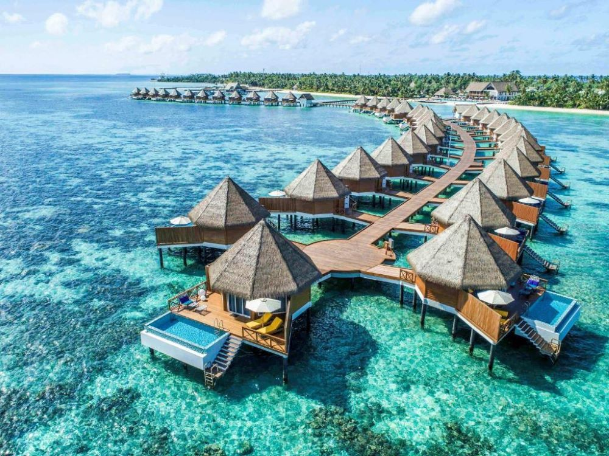
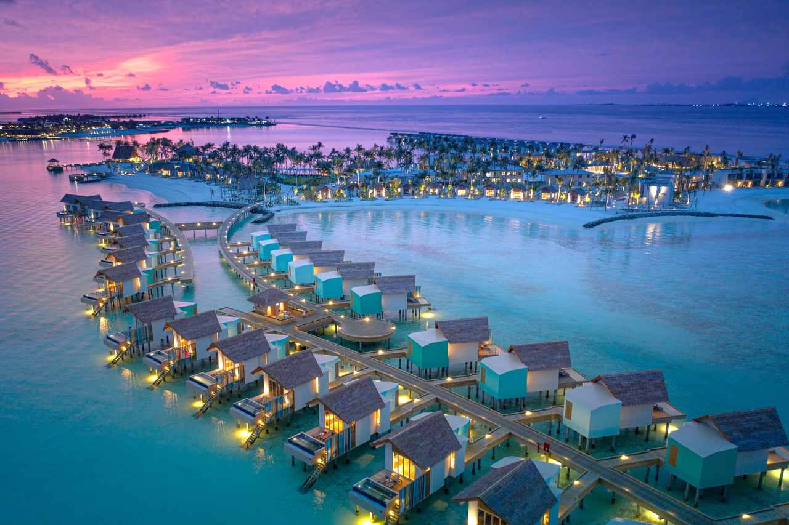
Maldivas
Maldivas
As Maldivas são um arquipélago no Oceano Índico, conhecido por suas ilhas paradisíacas, águas cristalinas e recifes de corais, sendo um dos destinos turísticos mais famosos do mundo.
The Maldives is an archipelago in the Indian Ocean, known for its idyllic islands, clear waters, and coral reefs, and is one of the world’s most popular tourist destinations.
❮
❯

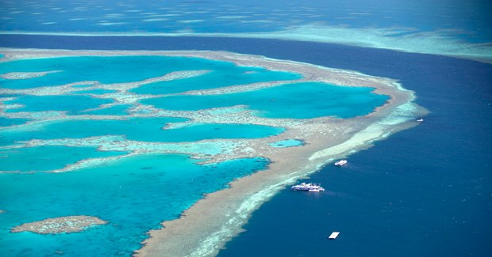
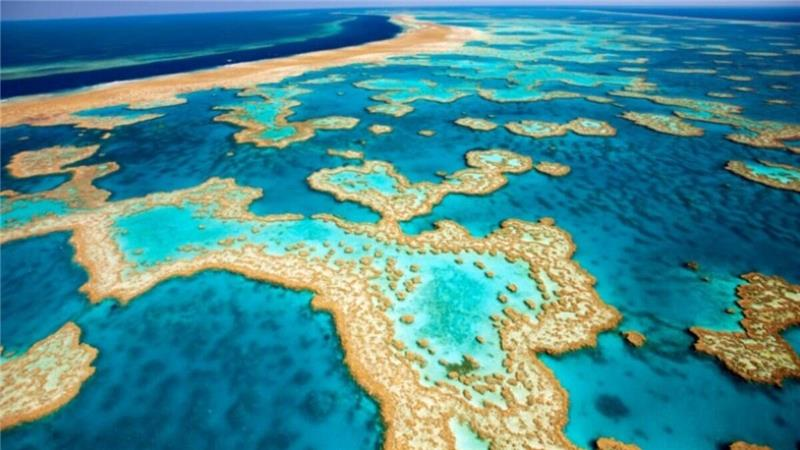
Grande Barreira de Corais
Great Coral Barrier
A Grande Barreira de Corais, na Austrália, é o maior sistema de recifes de corais do mundo, conhecida por sua impressionante biodiversidade marinha e paisagens naturais únicas.
The Great Barrier Reef in Australia is the largest coral reef system in the world, known for its impressive marine biodiversity and unique natural landscapes.


.png)